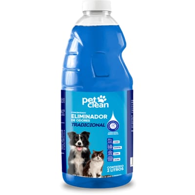

Nossos Produtos
Acessorios
Bolsa de Transporte
Uma bolsa prática, confortável e segura para levar seu pet com facilidade.
R$ 59,90
Bolinha
Uma bolinha leve e divertida para incentivar o seu pet a se exercitar.
R$12,90
Rações
Ração GranPlus para Gatos Adultos Castrados Frango e Arroz
Ração GranPlus para gatos adultos castrados, com sabor de frango e arroz. O pacote tem 10 kg e oferece uma nutrição equilibrada para cuidar do dia a dia do seu gato.
R$145,00
Ração Golden Fórmula para Cães Adultos de Porte Pequeno Sabor Carne e Arroz
Alimento Golden Fórmula para cães adultos de tamanho pequeno, com sabor de carne e arroz, em uma embalagem de 10 kg, criado para o cuidado e a saúde do seu cão.
R$ 130,90
Higiene e LimpezA

Eliminador de Odores
Removedor de odores de 2 litros, perfeito para acabar com cheiros em lugares onde há gatos e cães.
R$18,90
Kit Higiene para Cães
Kit de cuidados para animais cães que inclui hidratação e limpeza de focinhos, patas, orelhas e olhos.
R$109,90